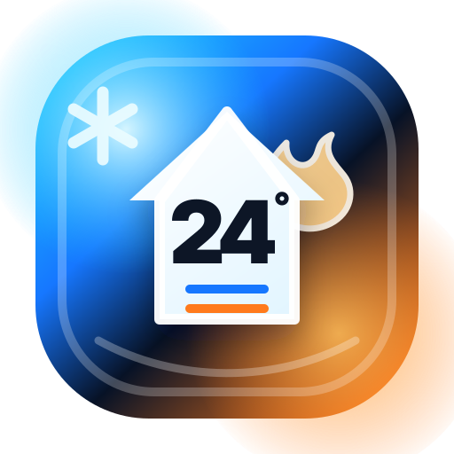

Vercel Analytics
Visitas, paginas vistas y rendimiento de la web.
Abrir Vercel
24 ClimatizacionesControl de metricas Abrir webLa web ya tiene preparada la medicion de visitas, clics importantes y envios a WhatsApp. Desde aca entras a cada herramienta gratis y completas los codigos que faltan para dejar todo activo.
Visitas, paginas vistas y rendimiento de la web.
Abrir VercelCampanas, origen del trafico y eventos de conversion.
Abrir GA4Busquedas reales de Google, clics e impresiones.
Abrir ConsoleGrabaciones anonimizadas, mapas de calor y abandonos.
Abrir ClarityFlujos de datos, abre el flujo web y copia el ID de medicion que empieza con G-.clarity.ms/tag/ y activa el enmascarado de texto.Prefijo de URL con https://24-climatizaciones.vercel.app/, verifica con etiqueta HTML y envia /sitemap.xml.Cuando agreguemos los IDs, estos eventos van a aparecer en GA4 y Clarity.
24_page_ready
24_start_request_click
24_whatsapp_send_click
24_whatsapp_generic_click
24_google_review_click
24_social_click
Usa estos enlaces en perfiles, grupos y publicaciones para saber de donde llegan los clientes.
GA4 Measurement ID: formato G-XXXXXXXXXX.Clarity Project ID: el codigo corto que aparece en clarity.ms/tag/....Search Console HTML tag: la meta etiqueta que entrega Google para verificar la propiedad.